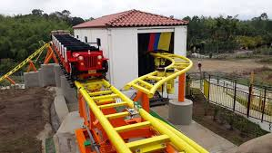

Yippe, es una montaña rusa para toda la familia que rinde homenaje a la cultura cafetera, sus 2 trenes representan el vehículo ícono de nuestra región.. ¡vibre de emoción y aventúrese a recorrer cafetales con divertidos efectos de agua!
Impactante montaña rusa, con giros de 360 y 180 grados,
con una caída de 30 metros, y una panorámica única que difícilmente podrás ver. ¡Atrévete!
velocidad maxima: 83 km/k
Altura maxima: 30 metros
Capacidad: 8 personas
Un recorrido por un canal de agua de 400 metros en botes
para 9 personas a través de cascadas, turbulencias y olas.
Capacidad: 9 pasajeros.
Estatura minima: 107 cms